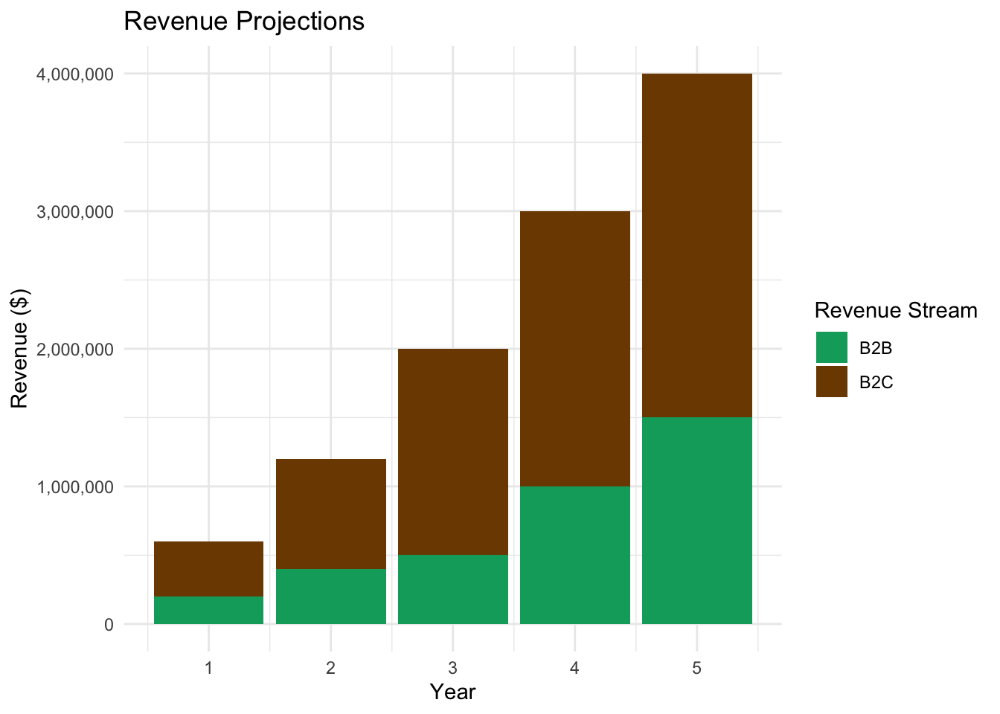
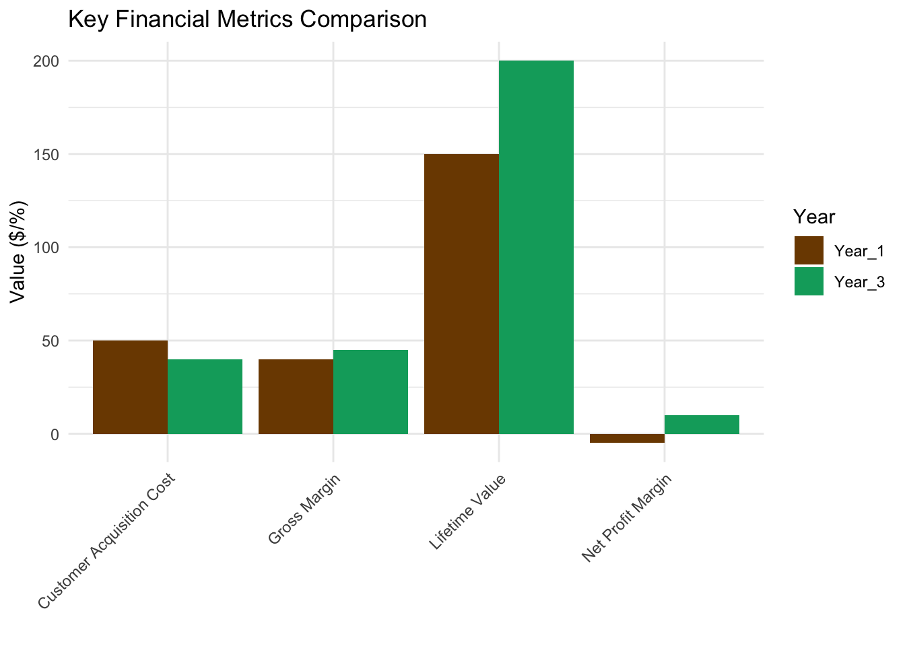

RwandaMarket’s financial plan outlines our projected revenue, expenses, and capital requirements to achieve our business objectives.
Startup Costs
Total estimated startup costs: $1,200,000
Breakdown: 1. Technology Infrastructure: $300,000 2. Inventory: $250,000 3. Real Estate (Store and Warehouse): $200,000 4. Marketing and Branding: $150,000 5. Staffing: $200,000 6. Legal and Administrative: $50,000 7. Contingency Fund: $50,000
Revenue Projections
Projected Profit and Loss Statement
[PLACEHOLDER: Detailed P&L Statement]
Key Points: - Projected break-even point: Month 18 - Estimated gross margin: 40% (Year 1), increasing to 45% by Year 3 - Marketing expenses: 20% of revenue (Year 1), decreasing to 15% by Year 3 - R&D investment: 10% of revenue, consistent across years
Cash Flow Forecast
[PLACEHOLDER: Monthly cash flow forecast for the first two years]
Break-even Analysis
- Fixed Costs (monthly): $60,000
- Average Gross Margin: 40%
- Break-even Point: $150,000 monthly revenue
Funding Requirements and Sources
Total funding required: $1,500,000
Sources: 1. Founder Investment: $300,000 2. Angel Investors: $700,000 3. Bank Loan: $500,000
Use of Funds: 1. Startup Costs: $1,200,000 2. Working Capital: $300,000
Financial Risks and Mitigation Strategies
- Currency Fluctuations
- Mitigation: Use of forward contracts and maintaining reserves in both KES and RWF
- Seasonal Sales Variations
- Mitigation: Diversified product range and B2B services to smooth revenue
- Inventory Obsolescence
- Mitigation: Data-driven inventory management and limited edition product strategies
- Cash Flow Management
- Mitigation: Conservative cash flow projections and maintaining a cash reserve

This financial plan demonstrates RwandaMarket’s path to profitability and long-term financial sustainability. Our diverse revenue streams, coupled with strategic cost management and funding, position us for strong growth in the East African market.